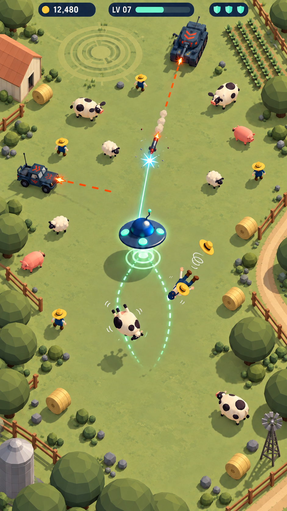
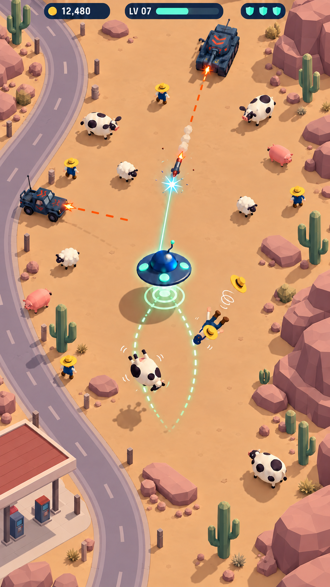

Farmland — sage, wheat and terracottaDusty sage fields, terracotta roofs, wheat hay and plum-green foliage
Suburbia — blue streets and warm homesDusty blue-grey road, muted coral/teal roofs, cream walls, sage hedges and small warm windows
Desert — ochre, mauve and dusty greenMuted warm ochre ground, mauve rock shadows, dusty sage cacti and rust/cream roadside canopy